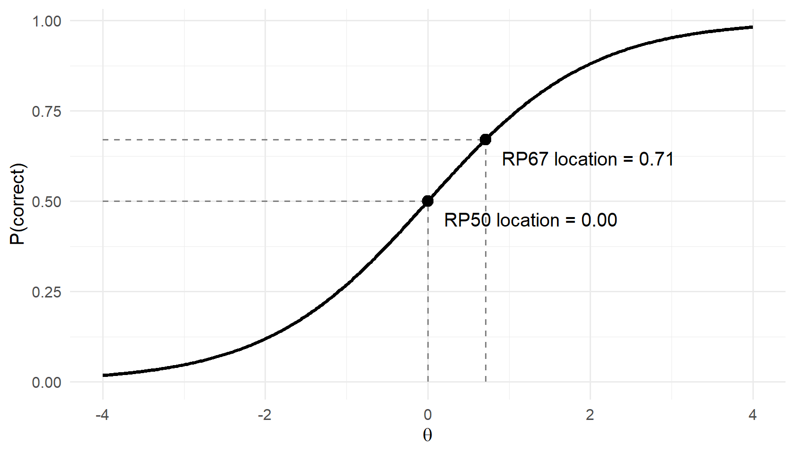
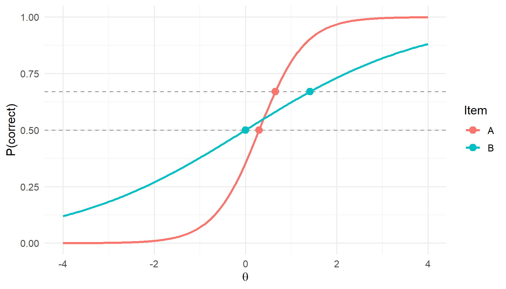
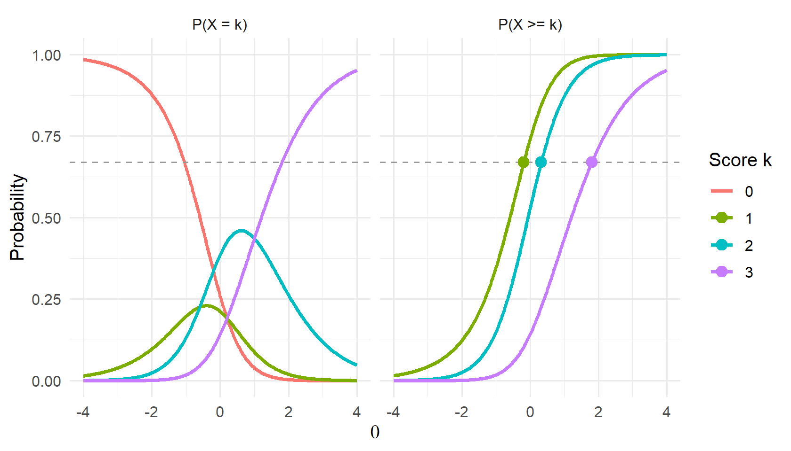

Item locations
Every ESS analysis starts from one number per item: its location on the score scale. The cut scores that emstans() reports are item locations, the order of the items is the order of their locations, and the ESS-Weight criterion is built from distances between locations and candidate cuts. How the locations are defined is therefore not a technical detail. It decides the cut scores as much as the panel’s judgments do.
This article explains what a location is, why it matters, and how to compute it with ess_locations() for Rasch, 2PL, 3PL and polytomous items.
What a location is
In an ESS study each item, or each score point of a polytomous item, is aligned to the performance level whose achievement level descriptor (ALD) it best matches. To turn those alignments into cut scores, every item needs a single point on the scale against which candidate cuts can be compared. That point is the item’s location.
An IRT model gives, for every ability \(\theta\), the probability of answering the item correctly. The location is the ability at which that probability reaches a chosen value, the response probability (RP):
\[ \text{location} = \theta \quad \text{such that} \quad P(\text{correct} \mid \theta) = RP . \]
For a score point \(k\) of a polytomous item the event is “earns score \(k\) or higher”:
\[ P(X \ge k \mid \theta) = RP . \]
The location can be read as “the ability at which a student has mastered the item”, with RP setting what mastered means. With RP = .67 (RP67) a student at the location answers the item correctly two times out of three; a student below it, less often.
item <- data.frame(Item_ID = "A", b = 0)
locs <- data.frame(
rp = c(0.5, 0.67),
theta = c(ess_locations(item, "rasch", rp = 0.5)$theta,
ess_locations(item, "rasch", rp = 0.67)$theta)
)
curve <- data.frame(theta = seq(-4, 4, by = 0.02))
curve$p <- plogis(curve$theta)
ggplot(curve, aes(theta, p)) +
geom_line(linewidth = 1) +
geom_segment(data = locs, aes(x = -4, xend = theta, y = rp, yend = rp),
linetype = "dashed", colour = "grey50") +
geom_segment(data = locs, aes(x = theta, xend = theta, y = 0, yend = rp),
linetype = "dashed", colour = "grey50") +
geom_point(data = locs, aes(theta, rp), size = 3) +
annotate("text", x = locs$theta + 0.2, y = locs$rp - 0.05, hjust = 0,
label = sprintf("RP%d location = %.2f", round(100 * locs$rp),
locs$theta)) +
labs(x = expression(theta), y = "P(correct)")
RP50 is the item difficulty \(b\) under the Rasch and 2PL models. Bookmark and item-mapping studies have mostly used RP67 (Mitzel et al., 2001); Huynh (1998, 2006) gave it a justification, described under 3PL below. Whatever value is used, it should be chosen before the study and reported with the results.
Why locations matter
The cut scores are item locations
ESS compares each candidate cut \(c\) with every item. For the cut between level \(k-1\) and level \(k\):
- an item aligned to level \(k\) or higher is inconsistent if its location is below \(c\);
- an item aligned below level \(k\) is inconsistent if its location is at or above \(c\).
ESS-Count counts the inconsistent items; ESS-Weight adds up their distances \(|\text{location} - c|\). emstans() evaluates the candidates at the item locations, so every cut score it returns is the location of some item, a “page” of the ordered item set (see the ESS method article).
Two consequences follow.
- The order of the locations decides which items fall on which side of a cut. ESS-Count depends on nothing else.
- The values of the locations decide the cut scores, and through them the share of examinees in each level.
The RP moves the cut scores
In a Bookmark study panelists see the ordered items and can, in principle, place their bookmark differently if they know the RP. In ESS the alignments are content judgments made against the ALDs, typically without reference to item locations, so nothing in the judgments offsets the choice of RP. The alignments fix which item becomes the cut, and the RP fixes where that item sits on the scale.
The example below makes this concrete. Forty Rasch items are aligned to “Proficient or above” or “below Proficient”. A minimal version of the ESS-Weight criterion finds the cut, here only for illustration; emstans() does this on real data.
# ESS-Weight for one cut: candidates are the item locations, ties go to the
# lowest candidate. `upper` is TRUE for items aligned at or above the level.
weight_cut <- function(location, upper) {
cand <- sort(unique(location))
w <- vapply(cand, function(c) {
sum(pmax(c - location[upper], 0)) + sum(pmax(location[!upper] - c, 0))
}, numeric(1))
cut <- cand[which.min(w)]
c(cut = cut, page = sum(location < cut) + 1)
}
set.seed(2026)
items <- data.frame(Item_ID = sprintf("i%02d", 1:40), b = sort(rnorm(40)))
items$upper <- items$b + rnorm(40, sd = 0.5) > 0.2 # aligned at/above Proficient
rps <- c(0.50, 0.60, 0.67, 0.75)
rasch <- do.call(rbind, lapply(rps, function(rp) {
loc <- ess_locations(items, "rasch", rp = rp)$location
cut <- weight_cut(loc, items$upper)
data.frame(RP = rp, page = cut[["page"]], cut = cut[["cut"]],
pct_at_or_above = 100 * pnorm(cut[["cut"]], lower.tail = FALSE))
}))
knitr::kable(rasch, digits = c(2, 0, 2, 1),
col.names = c("RP", "Cut page", "Cut (theta)",
"% at or above (N(0, 1))"))| RP | Cut page | Cut (theta) | % at or above (N(0, 1)) |
|---|---|---|---|
| 0.50 | 28 | 0.33 | 37.0 |
| 0.60 | 28 | 0.74 | 23.0 |
| 0.67 | 28 | 1.04 | 14.9 |
| 0.75 | 28 | 1.43 | 7.6 |
The same item is the cut at every RP; only its location changes. Moving from RP50 to RP67 raises the cut by 0.71 logits and, for a standard normal population, lowers the share at or above Proficient from 37% to 15%. The panel’s judgments are identical in every row.
Locations also give the levels their meaning
When the cuts are used to describe what students at each level can do, for example to refine ALDs or to build an item map for score reports, “can do” means “answers correctly with probability RP”. The same RP should be used for the cut scores and for those descriptions, otherwise the two tell different stories about the same students.
Computing locations
ess_locations() takes a table of item parameters, one row per item, and returns one row per location:
pars <- data.frame(
Item_ID = c("MC1", "MC2", "CR1"),
model = c("3pl", "2pl", "gpcm"),
a = c(1.2, 0.7, 0.9),
b1 = c(-0.5, 0.3, -1.0),
b2 = c(NA, NA, 0.2),
b3 = c(NA, NA, 1.1),
c = c(0.20, NA, NA)
)
ess_locations(pars, D = 1.702)
#> Item_ID item score max_score model p theta location
#> 1 MC1 MC1 1 1 3pl 0.67 -0.3268507 -0.3268507
#> 2 MC2 MC2 1 1 2pl 0.67 0.8944142 0.8944142
#> 3 CR1_1 CR1 1 3 gpcm 0.67 -0.6939925 -0.6939925
#> 4 CR1_2 CR1 2 3 gpcm 0.67 0.5041366 0.5041366
#> 5 CR1_3 CR1 3 3 gpcm 0.67 1.6324590 1.6324590-
modelcan be one value for all items, one per row, or (as here) amodelcolumn. - Thresholds go in
borb1,b2, …; items with fewer score points leave the later columnsNA. Other column names can be mapped withitem,a,bandc. - A polytomous item with maximum score \(K\) gives \(K\) rows, with IDs such as
CR1_1,CR1_2,CR1_3. Each of these is aligned and analysed as a page. -
thetais on the IRT scale;locationis on the reporting scale (see Reporting scale).
The rest of this section explains what the function computes for each model and what to watch for.
Dichotomous items
All three dichotomous models are special cases of
\[ P(\theta) = c + \frac{1 - c}{1 + \exp\{-D a (\theta - b)\}}, \]
and setting \(P(\theta) = p\) gives
\[ \theta_{p} = b + \frac{1}{D a} \log \frac{p - c}{1 - p} . \]
Rasch
With \(a = 1\) and \(c = 0\) the location is
\[ \theta_{RP} = b + \log \frac{RP}{1 - RP} . \]
Every item moves by the same amount when the RP changes:
shift <- data.frame(RP = c(0.50, 0.60, 2/3, 0.67, 0.75, 0.80))
shift$logit <- qlogis(shift$RP)
knitr::kable(shift, digits = 3, col.names = c("RP", "Shift above b (logits)"))| RP | Shift above b (logits) |
|---|---|
| 0.500 | 0.000 |
| 0.600 | 0.405 |
| 0.667 | 0.693 |
| 0.670 | 0.708 |
| 0.750 | 1.099 |
| 0.800 | 1.386 |
The order of the items never changes, so the alignments always select the same page (as in the table above), and the cut scores move by the shift. Under the Rasch model the RP is purely a choice of where on the scale to report the cut, but that choice changes impact, as shown above.
2PL
With \(c = 0\),
\[ \theta_{RP} = b + \frac{1}{D a} \log \frac{RP}{1 - RP} . \]
The shift is now inversely proportional to the discrimination \(a\). A weakly discriminating item moves much further than a sharp one, so changing the RP can change the order of the items.
two <- data.frame(Item_ID = c("A", "B"), a = c(2, 0.5), b = c(0.3, 0))
locs <- rbind(
cbind(ess_locations(two, "2pl", rp = 0.5), RP = "RP50"),
cbind(ess_locations(two, "2pl", rp = 0.67), RP = "RP67")
)
locs$p <- ifelse(locs$RP == "RP50", 0.5, 0.67)
curves <- do.call(rbind, lapply(1:2, function(i) {
th <- seq(-4, 4, by = 0.02)
data.frame(item = two$Item_ID[i], theta = th,
p = plogis(two$a[i] * (th - two$b[i])))
}))
ggplot(curves, aes(theta, p, colour = item)) +
geom_line(linewidth = 1) +
geom_hline(yintercept = c(0.5, 0.67), linetype = "dashed", colour = "grey60") +
geom_point(data = locs, aes(theta, p, colour = item), size = 3) +
labs(x = expression(theta), y = "P(correct)", colour = "Item")
knitr::kable(locs[, c("RP", "Item_ID", "theta")], digits = 2,
col.names = c("RP", "Item", "Location (theta)"), row.names = FALSE)| RP | Item | Location (theta) |
|---|---|---|
| RP50 | A | 0.30 |
| RP50 | B | 0.00 |
| RP67 | A | 0.65 |
| RP67 | B | 1.42 |
On a realistic test this is common. With 40 items and discriminations between about 0.5 and 1.7:
set.seed(1)
items2 <- data.frame(Item_ID = sprintf("i%02d", 1:40),
a = rlnorm(40, 0, 0.35), b = sort(rnorm(40)))
r50 <- rank(ess_locations(items2, "2pl", rp = 0.5)$theta)
r67 <- rank(ess_locations(items2, "2pl", rp = 0.67)$theta)
c(items_changing_rank = sum(r50 != r67),
largest_rank_change = max(abs(r50 - r67)))
#> items_changing_rank largest_rank_change
#> 33 14Because the order changes, the ESS cut can land on a different item, so under the 2PL the RP affects both which item is the cut and where it sits. Things to check:
- Low-discrimination items get extreme locations; with \(a = 0.3\) and \(D = 1\) the RP67 location is 2.4 logits above \(b\). Such items can end up far from where their content suggests and will weigh heavily in ESS-Weight. Review them, or consider whether they belong in the study.
- RP below .5 moves items the other way: weak items move down.
- The same RP must be used for every analysis that is compared (rounds, grades, sensitivity runs).
3PL
The lower asymptote \(c\) changes three things.
- \(b\) is not RP50. At \(\theta = b\) the probability is \((1 + c)/2\), for example .60 with \(c = .20\).
-
The RP must exceed \(c\). With
guessing = "none"(the default),ess_locations()solves \(P(\theta) = RP\) and stops with an error if \(RP \le c\) for any item. -
The meaning of RP67 drifts with \(c\). With
guessing = "none", the location is \(b + \log\{(RP - c)/(1 - RP)\}/(Da)\), which comes closer to \(b\) as \(c\) grows and falls below \(b\) once \(c > 2\,RP - 1\) (0.34 for RP67). Items with a high guessing parameter then look easier than items with the same \(a\) and \(b\) but no guessing.
Two adjustments are available:
-
guessing = "rescale"asks for RP of the way from the guessing floor to 1: \(p = c + (1 - c)\,RP\). The location becomes \(b + \log\{RP/(1 - RP)\}/(Da)\), the same as a 2PL item with the same \(a\) and \(b\). -
guessing = "huynh"uses \(p = (2 + c)/3\) (Huynh, 1998, 2006). Huynh’s argument is that a location should be where a correct answer tells us most about ability. The item information is \(I(\theta) = D^2 a^2 \frac{1 - P}{P} \left(\frac{P - c}{1 - c}\right)^2\), and the information contributed by a correct answer, \(P \cdot I(\theta)\), is proportional to \((1 - P)(P - c)^2\). Its maximum is at \(P = (2 + c)/3\), which gives the location \(b + \log 2/(Da)\). With \(c = 0\) this is \(P = 2/3\): the RP67 criterion is the special case of Huynh’s rule for items without guessing. With this optionrpis not used for 3PL items.
mc <- data.frame(Item_ID = sprintf("c = %.2f", c(0, 0.15, 0.25, 0.35)),
a = 1, b = 0, c = c(0, 0.15, 0.25, 0.35))
opts <- c("none", "rescale", "huynh")
tab <- sapply(opts, function(g)
ess_locations(mc, "3pl", D = 1.702, guessing = g)$theta)
tab <- data.frame(item = mc$Item_ID, P_at_b = (1 + mc$c) / 2, tab)
knitr::kable(tab, digits = 3,
col.names = c("Item (a = 1, b = 0)", "P at b",
"none", "rescale", "huynh"))| Item (a = 1, b = 0) | P at b | none | rescale | huynh |
|---|---|---|---|---|
| c = 0.00 | 0.500 | 0.416 | 0.416 | 0.407 |
| c = 0.15 | 0.575 | 0.267 | 0.416 | 0.407 |
| c = 0.25 | 0.625 | 0.142 | 0.416 | 0.407 |
| c = 0.35 | 0.675 | -0.018 | 0.416 | 0.407 |
None of the three options is “correct”. "none" keeps the plain meaning “two in three examinees at the location answer correctly”, including lucky guesses. "rescale" and "huynh" remove the effect of guessing on the item order. Decide before the study, and use the same choice for every grade and round.
Only 3PL items are affected by guessing; Rasch, 2PL and polytomous items always use rp. In a mixed-format test with guessing = "huynh", set rp = 2/3 if the other items should follow the same rule.
The scaling constant D
Item parameters come either on the logistic metric (\(D = 1\): mirt, flexMIRT, Winsteps) or on the normal metric (\(D = 1.702\), often written 1.7: PARSCALE, BILOG-MG and many operational programs). The RP shift is divided by \(D\), so a wrong \(D\) shrinks or stretches every shift by a factor of 1.7. Under the 2PL and 3PL that also changes the item order. Check the calibration report for the metric before computing locations.
Polytomous items
Score points are pages
A constructed-response item scored 0 to 3 does not have one location; it has three, one for each score point. Earning a 1 on the item and earning a 3 are different accomplishments and are aligned to ALDs separately, often to different levels. ess_locations() returns one row per score point, with IDs item_1, item_2, …, and each row enters the ESS analysis as its own page.
Which probability?
For a score point there are several candidate definitions. Consider a GPCM item scored 0 to 3 whose step difficulties are out of order:
cr <- data.frame(Item_ID = "CR", a = 1, b1 = 0.2, b2 = -0.6, b3 = 1.0)
gpcm_probs <- function(theta, deltas, a = 1, D = 1) {
z <- outer(theta, 0:length(deltas)) * D * a -
matrix(c(0, cumsum(D * a * deltas)), length(theta), length(deltas) + 1,
byrow = TRUE)
p <- exp(z - apply(z, 1, max))
p / rowSums(p)
}
deltas <- c(0.2, -0.6, 1.0)
th <- seq(-4, 4, by = 0.02)
P <- gpcm_probs(th, deltas)
cat_df <- data.frame(theta = th, score = factor(rep(0:3, each = length(th))),
p = as.vector(P), panel = "P(X = k)")
cum <- t(apply(P, 1, function(r) rev(cumsum(rev(r)))))[, -1]
cum_df <- data.frame(theta = th, score = factor(rep(1:3, each = length(th))),
p = as.vector(cum), panel = "P(X >= k)")
loc_cr <- ess_locations(cr, "gpcm")
pts <- data.frame(theta = loc_cr$theta, p = 0.67,
score = factor(loc_cr$score), panel = "P(X >= k)")
ggplot(rbind(cat_df, cum_df), aes(theta, p, colour = score)) +
geom_line(linewidth = 1) +
geom_hline(yintercept = 0.67, linetype = "dashed", colour = "grey60") +
geom_point(data = pts, size = 3) +
facet_wrap(~panel) +
labs(x = expression(theta), y = "Probability", colour = "Score k")
cum50 <- ess_locations(cr, "gpcm", rp = 0.5)$theta
knitr::kable(
data.frame(score = 1:3, step = deltas, max_p_category = apply(P, 2, max)[-1],
cum50 = cum50, cum67 = loc_cr$theta),
digits = 2,
col.names = c("Score k", "Step difficulty", "Max P(X = k)",
"P(X >= k) = .50", "P(X >= k) = .67")
)| Score k | Step difficulty | Max P(X = k) | P(X >= k) = .50 | P(X >= k) = .67 |
|---|---|---|---|---|
| 1 | 0.2 | 0.23 | -0.59 | -0.18 |
| 2 | -0.6 | 0.46 | -0.06 | 0.33 |
| 3 | 1.0 | 0.95 | 1.20 | 1.81 |
- Step difficulties (where scores \(k-1\) and \(k\) are equally likely) can be out of order, as here: score 2 would be “easier” than score 1. They are parameters of the model, not locations.
- Category probability \(P(X = k) = RP\) often has no solution, because a middle score may never be the most likely response, let alone reach .67 (score 1 here peaks at 0.23). When it does have one, it has two.
-
Cumulative probability \(P(X \ge k) = RP\) always has exactly one solution, and the locations of an item’s score points are always increasing in \(k\), whatever the steps. This is the definition used by
ess_locations()and the usual choice in Bookmark and item-mapping work.
Other definitions exist, for example ones based on the expected item score; ess_locations() does not offer them.
GRM
In the graded response model the cumulative curves are the model’s own boundary curves, \(P(X \ge k \mid \theta) = 1/[1 + \exp\{-Da(\theta - b_k)\}]\), so
\[ \theta_k = b_k + \frac{1}{D a} \log \frac{RP}{1 - RP} . \]
All score points of an item move by the same amount, so within an item the order is fixed. Between items the shift depends on \(a\), as for the 2PL. The boundaries \(b_k\) must increase; ess_locations() stops if they do not.
PCM and GPCM
In the (generalized) partial credit model,
\[ P(X = k \mid \theta) \propto \exp\Big\{\sum_{v=1}^{k} D a (\theta - \delta_v)\Big\}, \]
with step difficulties \(\delta_v\) (\(a = 1\) for the PCM). \(P(X \ge k)\) has no closed-form inverse, so ess_locations() solves \(P(X \ge k) = RP\) numerically. Disordered steps are allowed.
Mixed-format tests
One RP applies to all items. A score point of a constructed-response item and a multiple-choice item at the same location are then “mastered” in the same sense, which is what lets ESS put them on one scale. If 3PL items use guessing = "rescale" or "huynh", state this in the technical report, since multiple-choice and constructed-response items then follow different rules.
Parameters from calibration software
Programs parameterize the same models differently. Convert to the forms above before calling ess_locations():
| Source | Model | Conversion |
|---|---|---|
mirt, coef(fit, IRTpars = TRUE)
|
2PL, 3PL, graded, gpcm | already in the forms above (\(D = 1\)); rename g to c
|
| mirt, default slope-intercept | graded | \(b_k = -d_k / a\) |
| mirt, default slope-intercept | gpcm (scores 0 to K) | \(\delta_k = -(d_k - d_{k-1}) / a\), \(d_0 = 0\) |
| PARSCALE | GPCM with location \(b\) and steps \(d_v\) | \(\delta_v = b - d_v\), \(D = 1.7\) |
| Winsteps | PCM / rating scale, difficulty \(D_i\) and Andrich thresholds \(F_k\) | \(\delta_k = D_i + F_k\), \(D = 1\) |
A mirt fit can be turned into a parameter table in a few lines. The table from coef(..., simplify = TRUE) has b for dichotomous items and b1, b2, … for polytomous ones; ess_locations() accepts that layout.
library(mirt)
fit <- mirt(responses, 1, itemtype = c(rep("3PL", 30), rep("gpcm", 6)))
cf <- coef(fit, IRTpars = TRUE, simplify = TRUE)$items
pars <- data.frame(Item_ID = rownames(cf), cf, row.names = NULL)
names(pars)[names(pars) == "g"] <- "c"
type <- extract.mirt(fit, "itemtype")
pars$model <- c("Rasch" = "rasch", "2PL" = "2pl", "3PL" = "3pl",
"graded" = "grm", "gpcm" = "gpcm")[type]
pars$model[type == "Rasch" & extract.mirt(fit, "K") > 2] <- "pcm"
loc <- ess_locations(pars, D = 1)Whatever the source, check one polytomous item: at its locations the cumulative probabilities from the software should equal the RP.
Reporting scale
Cut scores are usually reported on a scale-score metric. If scale scores are a linear function of \(\theta\), pass the conversion:
ess_locations(pars, D = 1.702, slope = 50, intercept = 500)[, c("Item_ID", "theta", "location")]
#> Item_ID theta location
#> 1 MC1 -0.3268507 483.6575
#> 2 MC2 0.8944142 544.7207
#> 3 CR1_1 -0.6939925 465.3004
#> 4 CR1_2 0.5041366 525.2068
#> 5 CR1_3 1.6324590 581.6230Use the same conversion as for the examinee scores, and give the standard deviation and EC value used by emstans() on the same metric as the locations. ESS-Weight divides distances by the SD, so a \(\theta\)-metric location with a scale-score SD makes all weights nearly equal.
Any increasing conversion leaves the ESS cut pages unchanged: the same items become the cuts, and their converted locations are the converted cut scores. The distance-based diagnostics, such as the EC classification in the item review, are not invariant and depend on the metric.
Checklist
-
Decide the RP, and for 3PL items the
guessingrule, before the study, and use them for every grade, round and sensitivity run. - Check the metric. \(D = 1\) or 1.702, and the same metric for locations, SD and EC.
- Under the 2PL, 3PL and GRM, look at low-discrimination items, whose locations can be extreme.
- Treat each polytomous score point as a page, and align each score point to an ALD.
- Report the model, the RP, the guessing rule and the conversion to the reporting scale with the cut scores.
- Show the sensitivity. Rerun the analysis with locations at, say, RP50 and RP67 and report how the cuts and impact change. Under the Rasch model the cut items stay the same and only their positions move; under other models the cut items can change too.
References
Huynh, H. (1998). On score locations of binary and partial credit items and their applications to item mapping and criterion-referenced interpretation. Journal of Educational and Behavioral Statistics, 23(1), 35–56.
Huynh, H. (2006). A clarification on the response probability criterion RP67 for standard settings based on bookmark and item mapping. Educational Measurement: Issues and Practice, 25(2), 19–20.
Lewis, D., & Cook, R. (2020). Embedded standard setting: Aligning standard-setting methodology with contemporary assessment design principles. Educational Measurement: Issues and Practice, 39(1), 8–21.
Mitzel, H. C., Lewis, D. M., Patz, R. J., & Green, D. R. (2001). The Bookmark procedure: Psychological perspectives. In G. J. Cizek (Ed.), Setting performance standards: Concepts, methods, and perspectives (pp. 249–281). Lawrence Erlbaum.